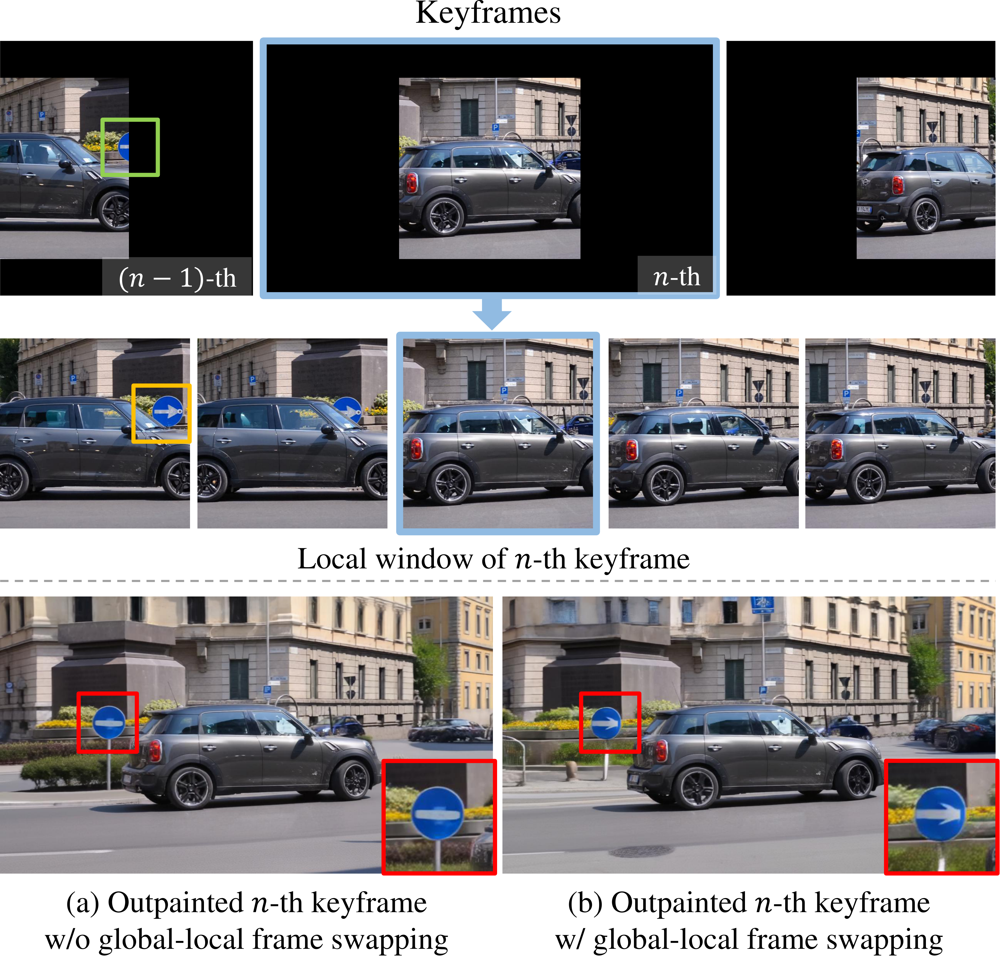

Method Overview

Overall framework of the proposed HL-OutPaint. (a) HL-OutPaint consists of two stages: Global Coarse Guidance Construction and GCG-Guided Video Outpainting. (b) Global Coarse Guidance Construction generates GCG from a spatio-temporally compressed video; at every diffusion timestep, global-local frame swapping aligns global keyframes with their local temporal windows, producing a globally consistent yet locally well-aligned GCG. (c) GCG-Guided Video Outpainting uses the GCG to outpaint large-scale videos.
Key Idea

The keyframes at the top provide global temporal anchors: they see the video sparsely over a long time span, so they are good at preserving the overall scene layout and long-range motion. However, because they are sampled sparsely, a keyframe alone can miss local details that happen between keyframes, such as the correct shape and position of a moving sign.
To recover these missing cues, HL-OutPaint also builds a local temporal window around each keyframe, shown in the middle row. This window contains neighboring frames around the selected keyframe, so it carries short-term motion and object appearance that the global keyframe sequence may overlook. During early denoising, global-local frame swapping copies the latent state of the same time instant between the global keyframe path and its local window path.
Intuitively, the global keyframes lend long-range structure, while the local windows lend nearby temporal evidence. Without this exchange, the outpainted keyframe can become structurally inconsistent, as shown in (a). With swapping, as shown in (b), the keyframe inherits the local window's fine cues while staying aligned with the global video context, producing a GCG that is both globally stable and locally coherent.